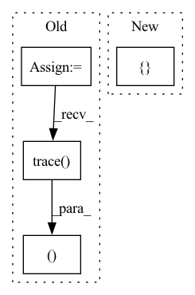

Pattern ID :29249

Before Change
model.eval()
class_num = data_loader.dataset.cls_num
conf_mat = np.zeros((class_num, class_num))
loss_sigma = []
path_error = []
for i, data in enumerate(data_loader):
inputs, labels, path_imgs = data
// inputs, labels = data
inputs, labels = inputs.to(device), labels.to(device)
outputs = model(inputs)
loss = loss_f(outputs.cpu(), labels.cpu())
// 统计混淆矩阵
_, predicted = torch.max(outputs.data, 1)
for j in range(len(labels)):
cate_i = labels[j].cpu().numpy()
pre_i = predicted[j].cpu().numpy()
conf_mat[cate_i, pre_i] += 1.
if cate_i != pre_i:
path_error.append((cate_i, pre_i, path_imgs[j])) // 记录错误样本的信息
// 统计loss
loss_sigma.append(loss.item())
acc_avg = conf_mat.trace() / conf_mat.sum()
return np.mean(loss_sigma), acc_avg, conf_mat, path_error
After Change
def valid(data_loader, model, loss_f, device):
model.eval()
loss_list = []
path_error = []
loss_mean = 0
acc_batch_list = []
for i, data in enumerate(data_loader):
In pattern: SUPERPATTERN
Frequency: 3
Non-data size: 4
Instances
Fragment ID: 85977469
Project Name: liaorongfan/deeppersonality
Commit Name: 565a883600a2f9be36416c98383ef54294da8ab1
Time: 2021-05-23
Author: 15670381505@163.com
File Name: dpcv/engine/portrait_model_trainer.py
M Class Name: ModelTrainer
N Class Name: ModelTrainer
M Method Name: valid(4)
N Method Name: valid(4)
M Parent Class: object
N Parent Class: object
M File Name: dpcv/engine/portrait_model_trainer.py
N File Name: dpcv/engine/portrait_model_trainer.py
M Start Line: 60
M End Line: 87
N Start Line: 54
N End Line: 71
'>
Before Change
// [[0, 1]
// [2, 3]]
device_mesh = DeviceMesh(physical_mesh_id, mesh_shape, init_process_group=True)
tracer = ColoTracer()
// graph():
// %x : torch.Tensor [//users=1] = placeholder[target=x]
// %linear_weight : [//users=1] = get_attr[target=linear.weight]
// %linear_bias : [//users=1] = get_attr[target=linear.bias]
// %linear : [//users=1] = call_function[target=torch._C._nn.linear](args = (%x, %linear_weight), kwargs = {})
// %add : [//users=1] = call_function[target=operator.add](args = (%linear, %linear_bias), kwargs = {})
// %mul : [//users=1] = call_function[target=operator.mul](args = (%add, 2), kwargs = {})
// return mul
graph = tracer.trace(root=model, meta_args={"x": torch.rand(4, 4).to("meta")})
// def forward(self, x : torch.Tensor):
// linear_weight = self.linear.weight
// linear_bias = self.linear.bias
// linear = torch._C._nn.linear(x, linear_weight); x = linear_weight = None
// add = linear + linear_bias; linear = linear_bias = None
// mul = add * 2; add = None
// return mul
gm = ColoGraphModule(model, graph)
gm.recompile()
node_list = list(graph.nodes)
solver_options = SolverOptions()
strategies_constructor = StrategiesConstructor(graph, device_mesh, solver_options)
strategies_constructor.build_strategies_and_cost()
linear_node = node_list[3]
cost_graph = CostGraph(strategies_constructor.leaf_strategies)
cost_graph.simplify_graph()
graph_analyser = GraphAnalyser(gm)
solver = Solver(gm.graph, strategies_constructor, cost_graph, graph_analyser)
ret = solver.call_solver_serialized_args()
solution = list(ret[0])
gm, sharding_spec_dict, origin_spec_dict, comm_actions_dict = runtime_preparation_pass(gm, solution, device_mesh)
gm = runtime_apply_pass(gm)
gm.recompile()
After Change
// [[0, 1]
// [2, 3]]
device_mesh = DeviceMesh(physical_mesh_id, mesh_shape, init_process_group=True)
meta_args = {"x": torch.rand(4, 4).to("meta")}
gm = initialize_model(model, meta_args=meta_args, device_mesh=device_mesh)
output = gm(input)
assert_close(output, output_compare)
'>
Fragment ID: 85977484
Project Name: hpcaitech/colossalai
Commit Name: cb3d1bef62b63eac96d976379a4930a0807e8da3
Time: 2023-02-07
Author: 72588413+YuliangLiu0306@users.noreply.github.com
File Name: tests/test_auto_parallel/test_tensor_shard/test_bias_addition_forward.py
M Class Name: AnonimousClass
N Class Name: AnonimousClass
M Method Name: check_linear_module(3)
N Method Name: check_linear_module(3)
M Parent Class:
N Parent Class:
M File Name: tests/test_auto_parallel/test_tensor_shard/test_bias_addition_forward.py
N File Name: tests/test_auto_parallel/test_tensor_shard/test_bias_addition_forward.py
M Start Line: 58
M End Line: 101
N Start Line: 48
N End Line: 58
'>
Before Change
// [[0, 1]
// [2, 3]]
device_mesh = DeviceMesh(physical_mesh_id, mesh_shape, init_process_group=True)
tracer = ColoTracer()
// graph():
// %x : torch.Tensor [//users=1] = placeholder[target=x]
// %conv_weight : [//users=1] = get_attr[target=conv.weight]
// %conv_bias : [//users=1] = get_attr[target=conv.bias]
// %conv2d : [//users=1] = call_function[target=torch.conv2d](args = (%x, %conv_weight), kwargs = {})
// %view : [//users=1] = call_method[target=view](args = (%conv_bias, [1, -1, 1, 1]), kwargs = {})
// %add : [//users=1] = call_function[target=operator.add](args = (%conv2d, %view), kwargs = {})
// %mul : [//users=1] = call_function[target=operator.mul](args = (%add, 2), kwargs = {})
// return mul
graph = tracer.trace(root=model, meta_args={"x": torch.rand(4, 3, 64, 64).to("meta")})
// def forward(self, x : torch.Tensor):
// conv_weight = self.conv.weight
// conv_bias = self.conv.bias
// conv2d = torch.conv2d(x, conv_weight); x = conv_weight = None
// view = conv_bias.view([1, -1, 1, 1]); conv_bias = None
// add = conv2d + view; conv2d = view = None
// mul = add * 2; add = None
// return mul
gm = ColoGraphModule(model, graph)
gm.recompile()
node_list = list(graph.nodes)
conv_node = node_list[3]
solver_options = SolverOptions()
strategies_constructor = StrategiesConstructor(graph, device_mesh, solver_options)
strategies_constructor.build_strategies_and_cost()
cost_graph = CostGraph(strategies_constructor.leaf_strategies)
cost_graph.simplify_graph()
graph_analyser = GraphAnalyser(gm)
solver = Solver(gm.graph, strategies_constructor, cost_graph, graph_analyser)
ret = solver.call_solver_serialized_args()
solution = list(ret[0])
gm, sharding_spec_dict, origin_spec_dict, comm_actions_dict = runtime_preparation_pass(gm, solution, device_mesh)
gm = runtime_apply_pass(gm)
gm.recompile()
After Change
// [[0, 1]
// [2, 3]]
device_mesh = DeviceMesh(physical_mesh_id, mesh_shape, init_process_group=True)
meta_args = {"x": torch.rand(4, 3, 64, 64).to("meta")}
gm = initialize_model(model, meta_args=meta_args, device_mesh=device_mesh)
output = gm(input)
assert_close(output, output_compare)
'>
Fragment ID: 85977480
Project Name: hpcaitech/colossalai
Commit Name: cb3d1bef62b63eac96d976379a4930a0807e8da3
Time: 2023-02-07
Author: 72588413+YuliangLiu0306@users.noreply.github.com
File Name: tests/test_auto_parallel/test_tensor_shard/test_bias_addition_forward.py
M Class Name: AnonimousClass
N Class Name: AnonimousClass
M Method Name: check_conv_module(3)
N Method Name: check_conv_module(3)
M Parent Class:
N Parent Class:
M File Name: tests/test_auto_parallel/test_tensor_shard/test_bias_addition_forward.py
N File Name: tests/test_auto_parallel/test_tensor_shard/test_bias_addition_forward.py
M Start Line: 108
M End Line: 156
N Start Line: 65
N End Line: 75